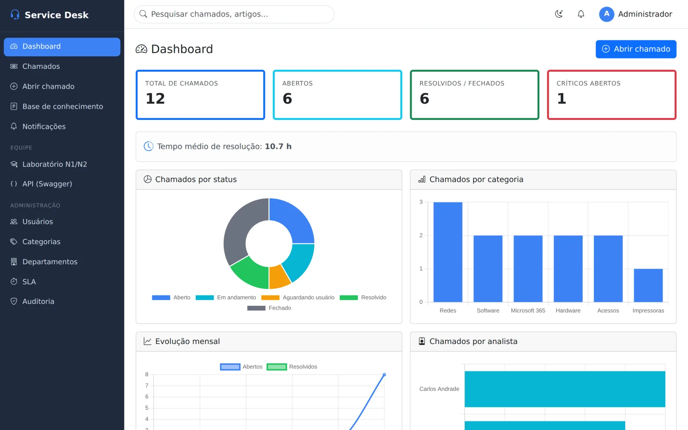
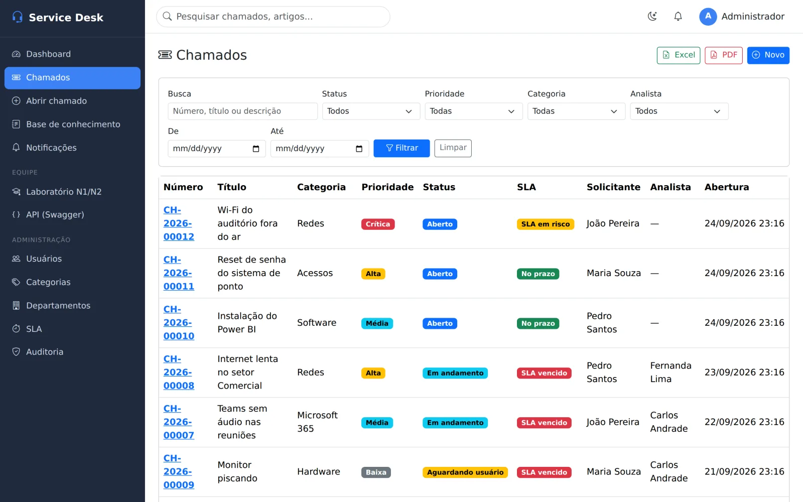
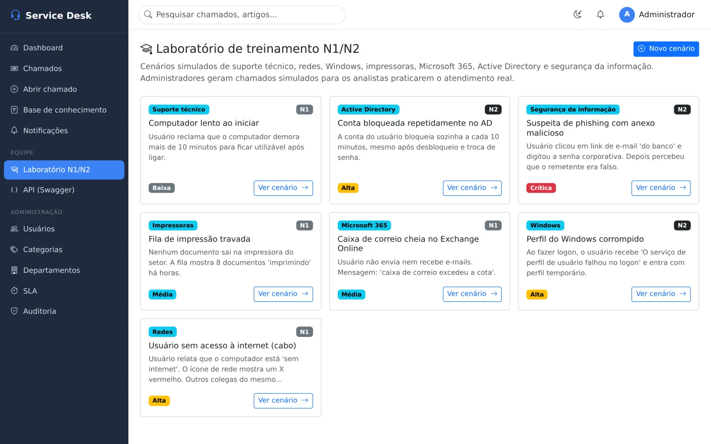

ProjetosSuporte de TI
Sistema de Chamados
Service desk completo, com laboratório para treinar a equipe.
Abertura, atendimento e SLA de chamados, base de conhecimento e cenários simulados para analistas N1/N2 praticarem antes do atendimento real.
Conferido no repositório público em 24 set 2026.
Direto do app
Telas reais



Capturas do app rodando com dados de exemplo, em 25 set 2026. Clique para ampliar.
Prova de entrega
O que já funciona hoje
Já entregue
- Chamados numerados com prioridade, status e SLA com alertas
- Painel por status, categoria e analista
- Base de conhecimento com busca
- Três perfis: admin, analista e usuário
- Auditoria de todas as ações
- Exportação em Excel e PDF
- API REST documentada
- Laboratório N1/N2 com cenários simulados e gabarito
Como está construído
- Flask, com SQLite ou PostgreSQL
- Migrações com Flask-Migrate e dados de exemplo
- Smoke test cobrindo login, permissões, SLA, anexos e API
- Código aberto no GitHub
No suporte
Do chamado aberto ao relatório
AbreO usuário descreve o problema.
PriorizaO prazo de SLA começa a contar.
AtendeO N1 resolve ou escala para o N2.
RegistraCada ação fica na auditoria.
MedeO chamado entra nos relatórios do painel.
Por que o Sistema de Chamados
Operar e treinar no mesmo sistema
Laboratório embutido
Analistas praticam cenários reais com gabarito antes de atender de verdade.
SLA à vista
O prazo de cada chamado aparece com alerta antes de estourar.
Tudo auditado
Quem fez o quê e quando fica registrado.
Em vez de controlar chamados em planilha ou e-mail: cada pedido tem número, prazo, responsável e histórico.
Transparência
O que vem a seguir
- Para quem é
- Equipes de suporte internas, escolas de TI e MSPs.
- Como usar
- Sistema web em Python: roda num servidor da empresa ou localmente para treinamento.
- Tecnologia
- Python, Flask, SQLite ou PostgreSQL, Bootstrap 5, Chart.js e Swagger.
Precisa organizar o suporte ou treinar a equipe?
Me chama no LinkedIn ou veja o código aberto no GitHub.